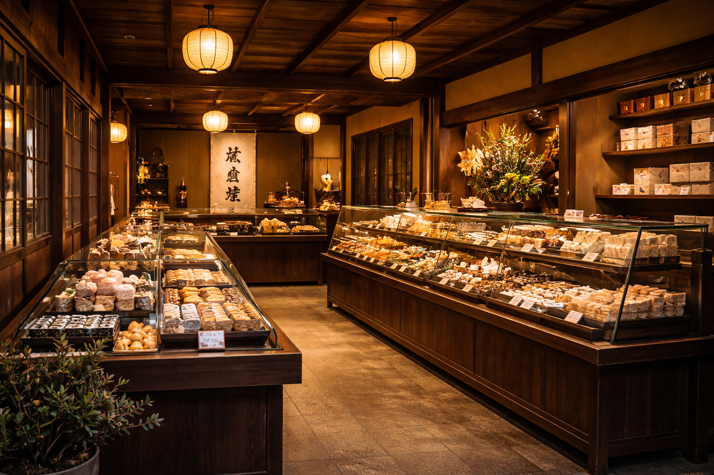

― お知らせ ―
-
2026年03月01日 春の上生菓子 販売開始のお知らせ
春の訪れを感じる季節となりました。
甘彩堂では、春の上生菓子の販売を開始いたしました。
「桜餅」「春霞」など、
やわらかな春の情景を菓子に映した一品をご用意しております。
それぞれ、春の始まりを上品に表現した和菓子となっております。
この季節ならではの味わいを、ぜひお楽しみください。
-
2025年11月27日 クリスマス限定詰め合わせの予約に関するご案内
木枯らしに冬の訪れを感じる頃となりましたが、
皆さまいかがお過ごしでしょうか。
来る12月25日。
クリスマスの季節が近づいてまいりました。
甘彩堂では、「雪うさぎ」「冬椿」「聖夜の練り切り」などを詰め合わせた、
クリスマス限定詰め合わせのご予約受付を開始いたしました。
冬らしい彩りとやさしい甘さを大切に、
ひとつひとつ丁寧にお作りしております。
ご家族との団らんのひとときや、
大切な方への贈りものにもおすすめの詰め合わせです。
数量限定でのご用意となりますので、
お早めにご予約ください。
-
2025年10月05日 和菓子づくり体験のご案内
甘彩堂では、10月30日に和菓子づくり体験を開催いたします。
今回のテーマは「ハロウィン」です。
練り切りを使い、
ハロウィンをモチーフにした和菓子づくりをご体験いただけます。
初めての方やお子様でも安心して楽しんでいただけるよう、
店員が丁寧にサポートいたします。
ご家族やご友人とご一緒に、
この季節ならではの和菓子づくりをぜひお楽しみください。
皆さまのご参加を心よりお待ちしております。


― ３月のおすすめ ―

桜餅
道明寺粉でもちもちと仕立てた生地に、
ほどよい甘さのこし餡を包みました。
塩漬けした桜葉のほのかな香りが、
春の訪れを感じさせる一品です。
¥350（税込み）

春霞（はるがすみ）
淡い桜色の練り切りで、春の霞を表現しました。
ほのかな塩味が、上品な甘さを引き立てます。
贈り物にも人気の季節菓子です。
¥420（税込み）

加賀棒茶どら
金沢名産の加賀棒茶を生地に練り込み、
香ばしさを楽しめるどら焼きに仕上げました。
甘さ控えめで、男性にも人気の一品です。
¥320（税込み）
― 贈りもの ―
梱包
甘彩堂では、ひとつひとつ手作業で丁寧にお包みしております。
化粧箱・のし・包装紙のご指定も承ります。
また、無料でメッセージカードをお付けいたします。
ご注文時に内容をご入力ください。
場面
季節のご挨拶からお祝い、帰省の手土産まで、
さまざまな用途に合わせた詰め合わせをご用意しております。
また、ビジネス向けの上品な定番菓撰から、
ご家族で楽しめる彩り豊かな詰め合わせまで、
贈る相手にふさわしい一箱をお選びいただけます。
配送
ご注文いただいた商品は、最短で翌営業日に発送いたします。
お届け日時のご指定も承っております。
全国への配送に対応しており、品質保持のため一部商品はクール便にてお届けいたします。
送料はお届け先の地域により異なります。
なお、税込7,000円以上のご注文で 送料無料 とさせていただきます。

― 甘彩堂の想い ―
昭和五十二年創業。
金沢の四季を、菓子に映すことを大切にしてまいりました。
素材の持ち味を活かし、
ひとつひとつ丁寧に手作りすること。
日々のささやかな楽しみから、
大切な方への贈りものまで。
心を込めた和菓子をお届けいたします。
― 特典・特集 ―
― 商品一覧 ―
桜餅
道明寺粉でもちもちと仕立てた生地に、
ほどよい甘さのこし餡を包みました。
塩漬けした桜葉のほのかな香りが、
春の訪れを感じさせる一品です。
¥350（税込み）
春霞（はるがすみ）
淡い桜色の練り切りで、春の霞を表現しました。
ほのかな塩味が、上品な甘さを引き立てます。
贈り物にも人気の季節菓子です。
¥420（税込み）
加賀棒茶どら
金沢名産の加賀棒茶を生地に練り込み、
香ばしさを楽しめるどら焼きに仕上げました。
甘さ控えめで、男性にも人気の一品です。
¥320（税込み）

きなこ餅
やわらかな餅生地に上品な粒あんを包み、香ばしいきな粉をたっぷりとまぶしました。
口に入れた瞬間に広がるきな粉の香りと、やさしい甘さがどこか懐かしい味わいです。
¥300（税込み）

最中
香ばしく焼き上げた最中皮に、
なめらかなこし餡を合わせました。
甘さを控えた上品な味わいで、
お茶請けや手土産に選ばれる一品です。
¥260（税込み）

羊かん
北海道産小豆をじっくり炊き上げ、
なめらかな口あたりに仕立てました。
すっきりとした甘さと、
重すぎない後味が特徴です。
¥1,600（税込み）
― 店舗情報 ―

営業時間：9:30〜18:00
定休日：毎週水曜日（祝日の場合は翌日振替）
〒920-0831
石川県金沢市東山1丁目12-8
電話番号：XXX-XXX-XXXX